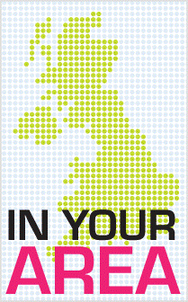
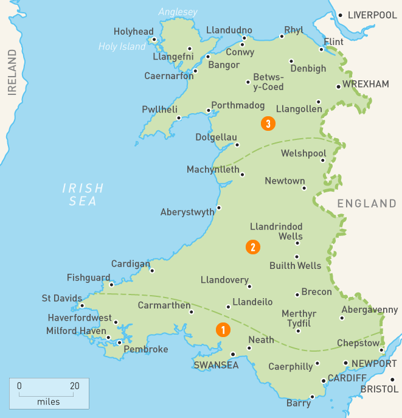
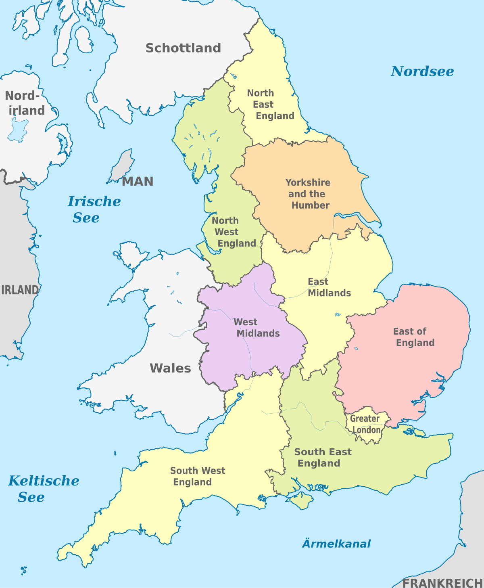
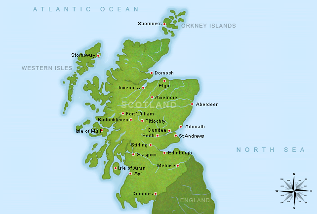
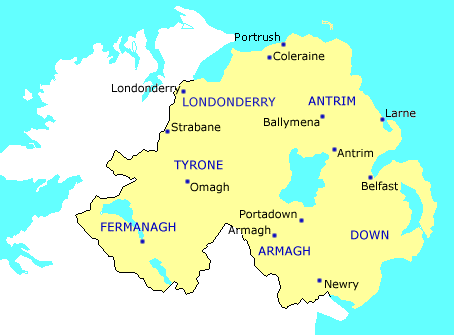

News from where you are:
   Wales
Average speed cameras could be placed on a 20-mile stretch of road.Wales' opt-out system for organ donation has not increased the number of donors.
A shoplifter with almost 400 previous convictions is back behind bars.
England
A pathologist suspected 13-month-old Poppi Worthington had been abusedThe search for missing RAF serviceman Corrie Mckeague is expected to end by Christmas.
A pedestrian has died after being hit by a police car on an emergency call in London.
Scotland
The Supermoon travelled over ScotlandAn empty fish factory is being brought back to life, with up to 20 jobs being created.
A £7.2m facelift for a section of one of Glasgow's most famous thoroughfares is to begin in the New Year.
Northern Ireland
A man whose body was found in a field had been shot three times in the head, Irish police have said.Ireland's deputy prime minister has said his country has "no desire" to delay the UK's Brexit talks.
A County Armagh village has lost its Christmas tree after it was "almost sawn in half" by vandals.